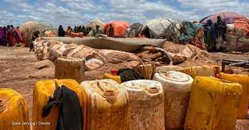
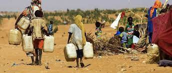
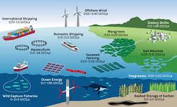
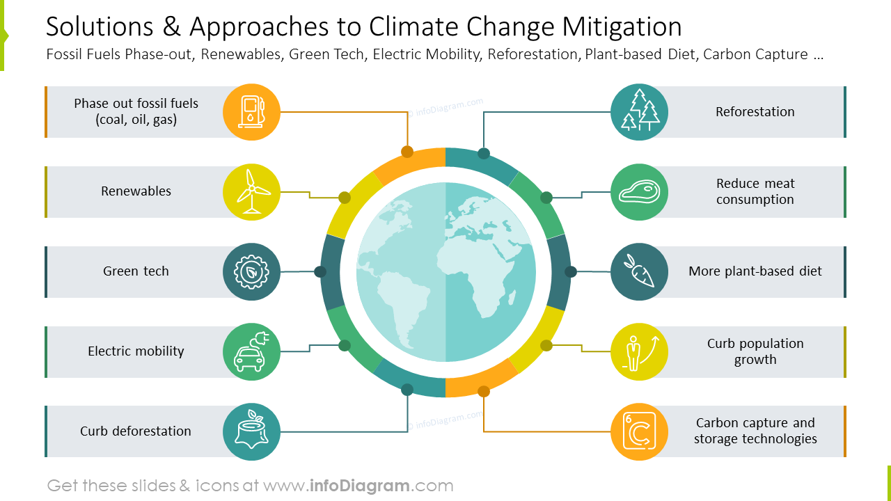

The changing climate in Somalia has caused many people to lose their homes, others have lost their livestock such as camels, goats and all their farms.
the impacts of climate change In Somalia, include droughts, reduced water availability, increased food insecurity, displacement of communities, and heightened vulnerability to conflict and instability.
Potential technology solutions for addressing climate change in Somalia include promoting renewable energy sources like solar and wind power, implementing efficient water management systems, developing climate-resilient agriculture techniques, and employing climate monitoring and early warning systems to manage extreme weather events.
To contribute to addressing climate change in Somalia, individuals and organizations can support reforestation efforts, promote sustainable land and water management practices, invest in clean energy projects, educate communities on climate adaptation strategies, and advocate for government policies that prioritize climate action.
